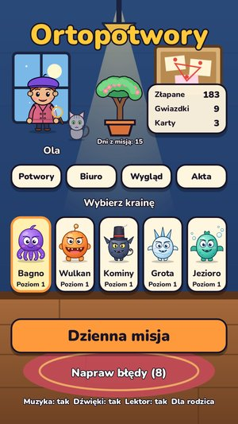
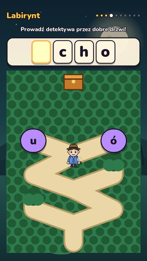
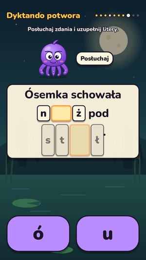
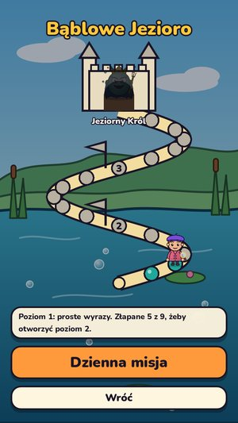
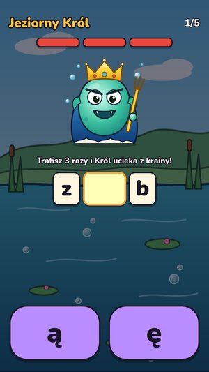
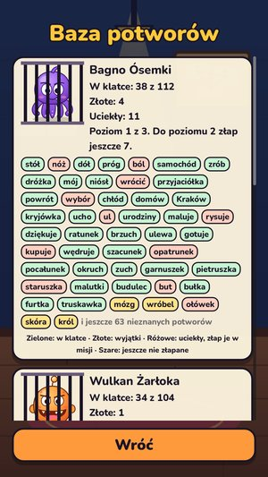
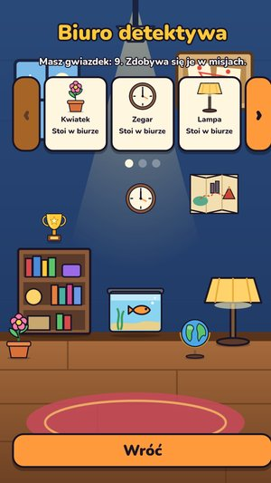

Ortopotwory: Detektywi ortografii
Gra do nauki ortografii: kilka minut dziennie, a trudne wyrazy z ó/u, rz/ż, ch/h, ą/ę i zmiękczeniami zostają w pamięci. Bez reklam, bez zbierania danych.
- dla dzieci 7–12 lat
- bez reklam
- bez internetu
- bez zbierania danych

Dla rodzica w skrócie
Kilka minut dziennie
Jedna misja trwa około 8–10 minut. Łatwo ją zmieścić przed szkołą albo po lekcjach.
Trudne wyrazy zostają w pamięci
Wyraz wraca po 1, 3, 7, 14 i 30 dniach, a po błędzie już jutro. Gra sama pilnuje, co powtórzyć.
Bez reklam
Żadnych reklam, losowania nagród ani subskrypcji. Pełna wersja to jeden zakup.
Prywatność
Bez kont i bez zbierania danych. Postępy zostają na telefonie, a gra działa bez internetu.
Widzisz postępy
Strefa rodzica pokazuje postępy w każdej krainie i wyrazy, które sprawiają dziecku kłopot.
Tylko poprawna pisownia
Gra nigdy nie pokazuje wyrazu z błędem, więc dziecko nie utrwala złej pisowni.
O grze
Złośliwe potworki pomieszały litery w Słowolandii. Ósemka z bagna, Żarłok i Rzepek z wulkanu, Chochlik z kominów, Śnieżek ze Śnieżnej Groty i Bąbel z Bąblowego Jeziora podmieniają ó i u, rz i ż, ch i h, ś i si oraz ą i ę. Dziecko jako ortodetektyw łapie je, poprawiając wyrazy.
Każdego dnia czeka krótka misja na około 8–10 minut: kilka minigier na przemian i pojedynek z Królem potworów. Każda kraina zaczyna się komiksem z regułą, a wyrazy wracają w powtórkach po 1, 3, 7, 14 i 30 dniach, żeby zostały w pamięci na dłużej.
Gra nigdy nie pokazuje wyrazu z błędem. Brakująca litera to puste pole, a po odpowiedzi dziecko widzi tylko poprawną pisownię.
Co jest w grze
5 krain, 425 wyrazów
Bagno Ósemki (ó/u), Wulkan Żarłoka (rz/ż), Kominy Chochlika (ch/h), Śnieżna Grota (ś/si, ć/ci, ź/zi, ń/ni, dź/dzi) i Bąblowe Jezioro (ą/ę, om/on/em/en). Każda zaczyna się komiksem z regułą.
Minigry na zmianę
Pułapka, Lupa i Labirynt na przemian, a na koniec misji pojedynek z Królem potworów.
Dyktando potwora
67 zdań czytanych przez lektora. Dziecko uzupełnia brakujące litery w całym zdaniu.
Odcisk palca
Po błędzie dziecko obrysowuje wyraz palcem, a lektor go czyta. Ruch, wzrok i słuch razem.
Własny detektyw
Wygląd, zwierzak, baza złapanych potworów i biuro z ozdobami za gwiazdki.
Drzewko serii
Rośnie za każdy dzień z misją i nigdy nie usycha. Przerwa niczego nie zabiera.
Tak to wygląda









Dla rodziców
- Bez reklam, bez kont i bez zbierania danych. Gra działa offline i nie prosi o dostęp do zdjęć, mikrofonu, kontaktów ani lokalizacji.
- Strefa dla rodzica za bramką: raport postępów w każdej krainie i najtrudniejsze wyrazy. Wszystko liczone na telefonie.
- Gwiazdki są za dokładność, nie za szybkość. Ozdoby kupuje się za gwiazdki, bez prawdziwych pieniędzy i bez losowania.
- Detektyw ma tylko imię, bez nazwiska i zdjęcia. Akta sprawy dla starszych dzieci (10–12 lat) uczą uzasadniać pisownię regułą.
Ile to kosztuje
- Pierwsza kraina, Bagno Ósemki (ó/u), jest za darmo i bez limitu czasu.
- Pełna wersja otwiera pozostałe krainy: Wulkan Żarłoka, Kominy Chochlika, Śnieżną Grotę i Bąblowe Jezioro. To jednorazowy zakup za 19,99 zł, bez subskrypcji i bez waluty w grze.
- Zakup jest tylko w strefie rodzica, za bramką, więc dziecko nie kupi niczego przypadkiem.
Ortopotwory: Spelling Detectives (English)
Mischievous monsters have mixed up the letters in Wordland. The Eight from the swamp, the Glutton and Rzepek from the volcano, the Imp from the chimneys, Snowy from the Snow Cave and Bubble from Bubble Lake swap ó and u, rz and ż, ch and h, ś and si, and ą and ę. As a spelling detective, your child catches them by fixing the words.
Every day brings a short mission of about 8–10 minutes: a few alternating mini-games and a duel with the Monster King. Each land starts with a comic that explains the rule, and words come back for review after 1, 3, 7, 14 and 30 days so they stick.
The game never shows a misspelled word. The missing letter is an empty box, and after answering the child only ever sees the correct spelling.
The first land is free. The full version, with all five lands, is a one-time purchase of 19.99 PLN behind a parental gate, with no subscription.